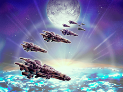

- Welcome to Touhou Wiki!
- Please register to edit. For assistance, check in with our Discord server or IRC channel.
Seihou World
| The title of this article is unofficial; an official name hasn't been found, so it's been given a fitting title by the editors of this wiki for amenity, either from a popular fan-name or a mere description of the topic. If an official name appears, then it should be moved to the official name. |
| Location name unknown | |
|---|---|
|
 The title screen of the C67 version of Banshiryuu, where Earth is at the bottom, Mars at the top and lots of spaceships in the middle.
| |
| Location |
There's no location for this as it's referring to a cosmos, but if info from the Touhou Project was included, then it could be on one side of the Silk Road |
| Residents |
|
Appearances | |
| Official Games | |
| |
| Other | |
| |
- Note: This article is part of the Seihou Project by the Doujin circle "Shunsatsu sare do?".
The Seihou World is the primary setting of the Seihou Project games. It's unclear of what the universe is, but it's suppose to be set in the far future where technology is advanced.
General Information[edit]
Geography and People[edit]
The cosmos is known to have two planets, Mars and Earth, as well as a Sun along with millions of stars seen thru outer space. Meteoroids are known to orbit near Earth, with a Military Base also orbiting Earth.
According to Shuusou Gyoku's extra stage, this world may not be based around Shinto compared to the Touhou Project, but more to Christianity, since it's only known that Hirano Sakurasaki has a relation to Shinto in this world, and most characters have Western names. It's very futuristic, where there's spaceships, combat robots, and endless space stations. Anyone can get from Earth to Mars is a matter of days[Ref. Needed].
The universe mostly appears to only have humans and no "youkai" creatures, with rare exceptions such as Muse (and probably Icarus and Vivit). It has been shown, like Gensokyo, that it's possible for someone to turn into a phantom. Also, technology is so advance it's possible to turn a human into a cyborg if any damage was caused.
History[edit]
Little is known about the far past of the world of Seihou. Many decades ago on Earth, for some reason the environment was getting worse, and all its vegetation got extinct, except for the cactus. The Cactus Company, founded by Erich, then tried to extract energy from the cacti for humanity to continue, but over time they were unable to stable the energy, causing a disastrous explosion.[1] It turned Erich into a cyborg and got Vivit (Erich's Daughter) trapped in a machine in what is called the "Other Dimension". While the company managed to control the energy, they created a maid-type robot called VIVIT, who was based on Vivit.
Another time later, the same company discovered RedStorm, and placed its energy plant on Mars. However, a spaceship with Yuitia inside it went into fault and thus killed her, turning her into a phantom. She was then taken into and fused with RedStorm (which lost her true character) and went on a rampage as well as causing a rampage among all the machines that used RedStorm.
Canonicity on the Seihou World[edit]
In terms to canon from the Seihou Project, to look into where the Seihou World is as a location doesn't matter. However, due to having official connections with the Touhou Project in both Seihou & Touhou canon, but also as having scanty information on where the Seihou World is in Touhou, the location of the Seihou World is questionable, debatable, ambiguous, and very complex. Also, the canonicity between the Touhou Project games PC-98 and Windows are mostly unrelated and the stories are entirely separate, but references and carry-overs from the PC-98 to Windows have been shown. See the article 'canon' for more information on PC-98 & Windows.
Canonicity on Samidare[edit]
Samidare is part of Project Blank and was created by RebRank. The setting of Samidare is in another dimension compared to the Seihou World and Gensokyo.[2] VIVIT was looking for the Holy Grail on the Extra Stage for her master, Erich. She said she has to find it "today". She was also looking for it on Shuusou Gyoku's Extra Stage, also stating "today".[3]
The appearances for Yuki & Mai (Along with the Bakebake) in this game didn't had ZUN's involvement and thus making their appearance unofficial and may just have been a reference. Also, the theme during their appearance shows a Shinto feeling.
Conspiracy Theories as an Alternative Dimension to the Outside World[edit]
The Seihou World is certainly not in Gensokyo. Yuuka's been referred to as "foreign" by Milia[4], and VIVIT got completely lost during the Extra Stage of Shuusou Gyoku and ended up in Gensokyo without knowing since she was worried about getting back home.[3] It's unknown of how and why Yuuka ended up in the Seihou World in Kioh Gyoku. Gensokyo is known to be set in the modern era while the Seihou World is set in the future, so for Marisa and Reimu to live for a very long time is highly unlikely.
- Note: The following states the Seihou World to have a possibility of been a different dimension from the outside world, where it uses non-canon information (i.e. the Touhou Project, classifying both PC-98 & Windows to be related), and therefore the information on the following is questionable and could be wrong.
The Seihou World may not be in the outside world. This stems from the fact that Reimu, Marisa, and Yuuka appear in the Seihou Project, with various characteristics been very similar and having ZUN's involvement in the series.
On Shuusou Gyoku's Extra Stage, Marisa says "Here's some magic I haven't tried in a while,"[3] which the game was release two years after Mystic Square, and both Reimu and Marisa looks similar to their Embodiment of Scarlet Devil's outfit's. As well in Gensokyo's timeline, it's said that Mystic Square was in set in 2003 while Embodiment of Scarlet Devil was officially on 2003/08/12, with Mystic Square not having spell cards, where as Embodiment of Scarlet Devil did. Reimu and Marisa wasn't seen using spell cards in Shuusou Gyoku, so to say that the system was created after the event of Shuusou Gyoku's Extra would make sense, creating a small gap in 2003 for the Extra to occur.
There've been a number of remarks, such as in Shuusou Gyoku on the comment for the theme "Silk Road Alice" where ZUN quoted "Our maid heroine must also travel the silk roa- (abridged)."[5] It's known that VIVIT must've travelled the Silk Road, and in the Extra Stage, she ended up at the Hakurei Shrine. Another example is the comment for "Dichromatic Lotus Butterfly ~ Red and White" in Dolls in Pseudo Paradise. Reimu quotes "It looks like some strange person has slipped through again. I'd better do something before she gets to the shrine... Oh, that girl... doesn't look like a human nor a youkai,"[6] where she might be referring to VIVIT who got lost in the Extra of Shuusou Gyoku, who is neither a human nor a youkai, and is a robot. VIVIT's the only source to point to who "slipped through" (most likely referring to the Great Hakurei Barrier) and isn't a human or youkai.
In Kioh Gyoku, Yuuka was given a profile that there's "well, some relation." It was stated that she managed to obtain "ultimate magic" in the profile, where after Mystic Square's Extra Stage ending she received "ultimate magic". Also, due to the theme that the game has with attacks similar to Phantasmagoria of Flower View that used spell cards, it's unknown if Yuuka started using spell cards at the time of Kioh Gyoku.
Earth lost all its vegetation (except for the cactus and exceptions of grass and trees), but it appeared that on the Extra that there were numerous amount of plants and flowers in the background on the Silk Road and at the Hakurei Shrine. Reimu and Marisa also appeared to had no involvement in what has happened to the world of Seihou when it lost all its vegetation and that riots happened across the planet.
It's impossible for anyone (apart from Yukari Yakumo) from Gensokyo to enter the outside world. There's been occasions however where certain beings have passed through the Great Hakurei Barrier. As said, it's unknown how Yuuka entered the Seihou World, but from a speculative point of view, it can be only said that she may have travelled up the Silk Road, but this can be false as there's no prove. Unrelated in Samidare, the comment on the third Extra Stage theme (i.e. "East of Eden", where Yuki and Mai appear) quotes "Outside rhythms flowing from a radio slipped in through a spiritual barrier."[7]
If all this is true, then the Seihou World would be running at the same timeline to Gensokyo and the outside world. It could be another dimension that's a clone like the outside world, but just more futuristic and has a different date.
- Note: The following states the Seihou World to be the outside world in the future. It doesn't use non-canon information (i.e. the Touhou Project).
In Shuusou Gyoku, the prologue at the start simply says "This tale is set on Earth, way in the future."[1] The appearances of the Touhou cast within the Seihou Project is non-canon to the Touhou Project as they appear in the Seihou Project as "guests", even though they were added by ZUN himself, which to add that ZUN didn't create the Seihou Project.
As stated on an above comment, Reimu and Marisa had no involvement in what has happened to the world of Seihou when it lost all its vegetation and that riots happened across the planet. On the other hand instead of having connexions with the world of Seihou, Reimu and Marisa have no canonicity for them to be aware of the Earths environment in Seihou.
- Note: The following continues with the above said, but it uses non-canon information (i.e. the Touhou Project), so therefore the information is questionable and could be wrong.
According to Hieda no Akyu in Perfect Memento in Strict Sense, Marisa Kirisame might possibly become a youkai in the future due to been an over-powered human magician, and youkai's can live for a very long time.[8] Since Yuuka Kazami is a youkai, she may live for a very long time anyway (this also goes to Yuki and Mai). There's no canon information about Reimu Hakurei and her future.
Sub-Locations[edit]
The Seihou World is composed of several landmarks, planets and other miscellany sectors. Here's a list of locations within the Seihou World.
Earth[edit]
- Earth (地球 chikyuu) is mostly the prime location of the Seihou Project. It's a planet that has humanity living on it, but at some point decades ago it lost all its vegetation and thus all humanity have to rely on cactus energy after long research through cacti. The Cactus Company is held on this planet, founded by Erich, who specialises in the energy.[1] Earth still happens to have different themed landscapes though, such as grassy plains, metropolitan cities, deserts and seas.[9]
- Even though Earth has lost its vegetation (exept for the cactus), layers of grass was still shown in Shuusou Gyoku and Kioh Gyoku, but this was decades later after vegetation went extinct. In Banshiryuu, even trees appeared in the Forest of Great Regression. This could suggest Earth still had some form of vegetation and that it's slowly improving.
Mars[edit]
- Mars (火星 Kasei) is another planet next to Earth. Little is known about the planet, except that it holds the energy plant "Red Storm" that was founded by the Cactus Company. Yuitia is caught in an accident near the planet and eventually got fused with a machine in Red Storm, causing a rampage on Earth. It's the setting of the final stage of Banshiryuu.
Outer Space[edit]
- Outer Space (宇宙 Uchuu) is just what the name calls it, but in relation to the Seihou Project there's little information about it. Humans are able to travel through the vacuum since many spaceships are seen attacking VIVIT. It's the setting of the fourth stage of Shuusou Gyoku where Marie attacks VIVIT. There appears to be a route called "Mars Route T-14" (火星航路T-14 Kasei kōro T-14), which could suggest that it's a 'pathway' from Earth to Mars. If so, then it's the setting of the fifth stage of Banshiryuu where Lagunas attacks VIVIT and Hirano Sakurasaki.
Military Base[edit]
- The Military Base (基地 Kichi) is a satellite base that presumably has some involvement with Erich, the cactus energy and the entrance to the "Other Dimension". As VIVIT says "When did they make such thing upon a satellite orbit?" it suggest that it's in orbit with Earth.[10] It's the setting for the fifth stage of Shuusou Gyoku. Strangely, numerous magic circle's appears on the base.
Other Dimension[edit]
- The Other Dimension (異空間 I kūkan, or even referred to as unusual dimension) is a cold, frightening and mysterious dimension.[10] It's the setting of Stage 6 of Shuusou Gyoku, where Vivit (Erich's daughter) was mysteriously captured and trapped here after an incident with cactus energy decades ago. It appears to have a strange background that contains rain and illusionary clocks going down the screen.[10]
Silk Road[edit]
- In reality, the Silk Road (シルクロード Shirukurōdo) refers to a network of interlinking trade routes, connecting the East to the West. It connects East Asia, South Asia, Java-Indonesia, the Arabian Peninsula, Central Asia, India, North Africa, East Africa and Europe all together with this road. It's furthest to the East is Japan and the furthest to the West is Italy.
- In the Seihou Project, the Silk Road was stated by ZUN where he said in the music comments of Shuusou Gyoku "Our maid heroine must also travel the silk roa- (abridged)."[5] This could suggest that VIVIT must've travelled down the Silk Road to get to the Hakurei Shrine. It can also suggest that it's the setting of the first half of the Extra Stage of Shuusou Gyoku. The Silk Road appears to have a numerous amount of plants and flowers in the background. This is odd because it's known that Earth lost all its vegetation (except for the cactus and exceptions of grass and trees). The Hakurei Shrine also appears to have a numerous amount of plants and flowers in the background.
Forest of Great Regression[edit]
- The Forest of Great Regression (大いなる逆進化の森 Ōinaru gyaku shinka no mori) was a starting point for the heroine on the first stage of Banshiryuu. Very little is known about the forest except that it also appeared as the fourth scene in the Extra when fighting Gates. While it's known Earth's vegetation has gone extinct (except for the cactus), the forest still appears to have a few trees.
Hirano's Shrine[edit]
- Hirano's shrine first appeared on the forth stage of Banshiryuu. There isn't much known about this shrine except that it's owned by Hirano Sakurasaki and the god for this shrine is Gyoku. Its location is unknown since The Tri Stars sent VIVIT-r through a 'warp device' to the shrine on the third stage. The music room's comments describe this shrine as being in a "mysterious foreign space". It's most likely on Earth due to VIVIT-r going to outer space on the fifth stage after defeating Hirano.
See Also[edit]
- Wikipedia entry for Earth
- Wikipedia entry for Mars
- Wikipedia entry for World
- Wikipedia entry for Outer Space
- Wikipedia entry for Silk Road
- Wikipedia entry for Multiverse
References[edit]
- ↑ 1.0 1.1 1.2 Shuusou Gyoku: Prologue
- ↑ Samidare: no04-m05report.txt
- ↑ 3.0 3.1 3.2 Shuusou Gyoku: Extra Scenario
- ↑ Kioh Gyoku: Scenario
- ↑ 5.0 5.1 Shuusou Gyoku: Music
- ↑ Dolls in Pseudo Paradise: Story
- ↑ Samidare: Music
- ↑ Perfect Memento in Strict Sense: Marisa Kirisame's article
- ↑ Shuusou Gyoku: Manual
- ↑ 10.0 10.1 10.2 Shuusou Gyoku: Main Scenario